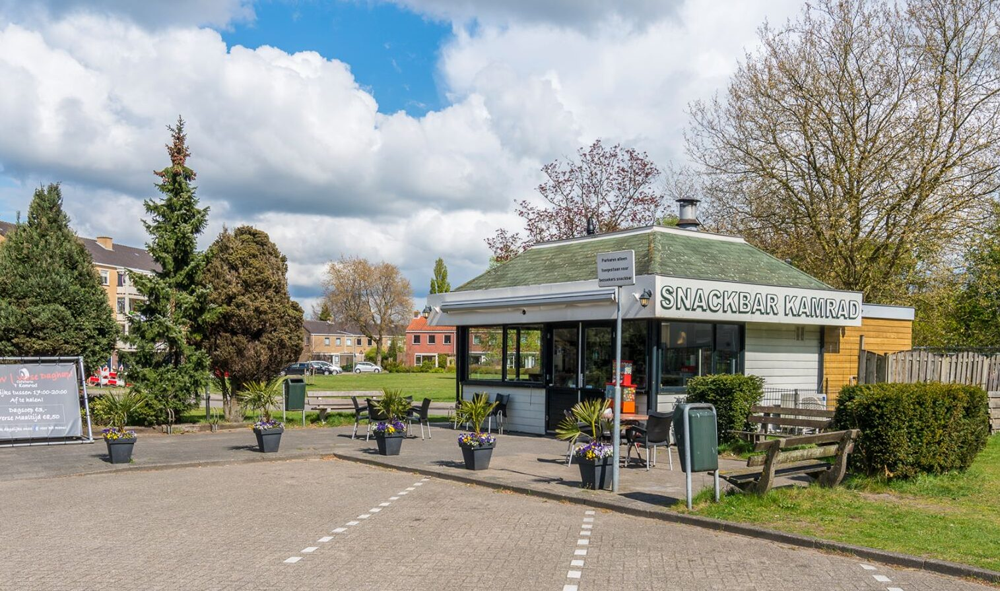
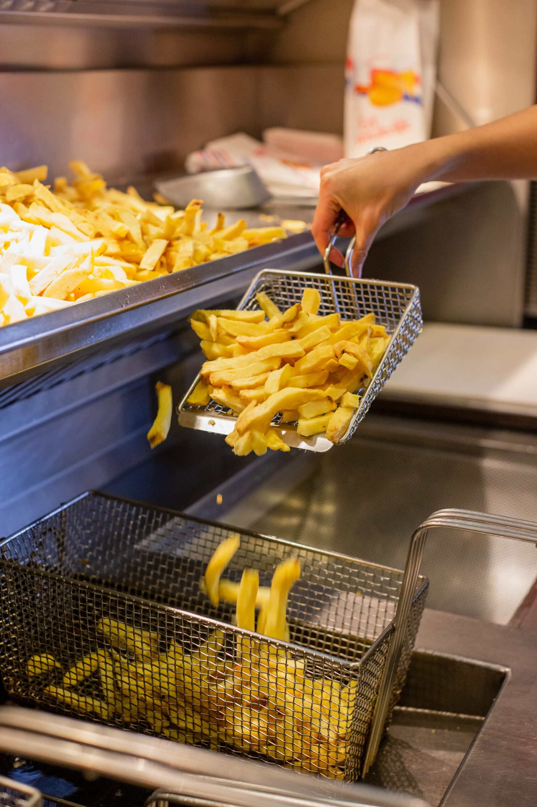
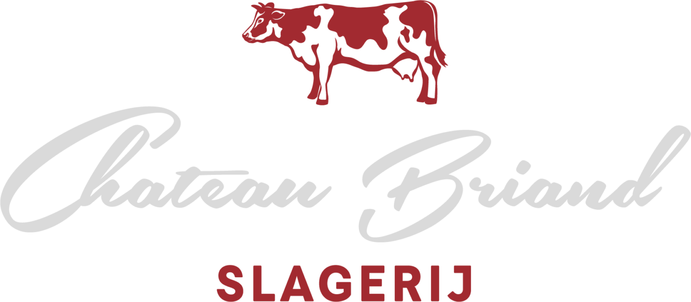
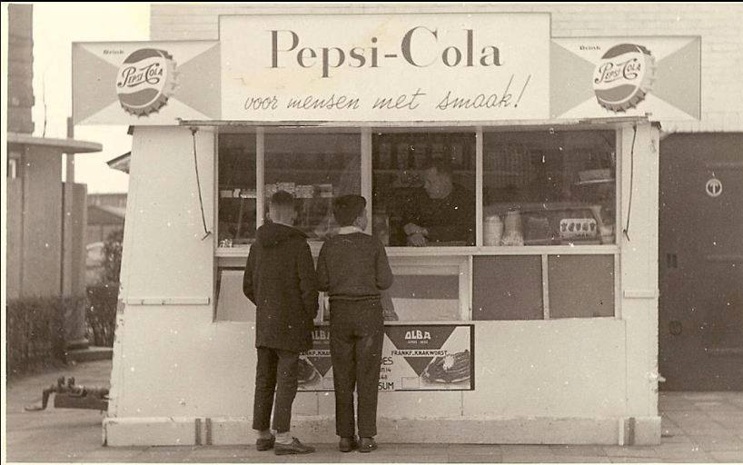
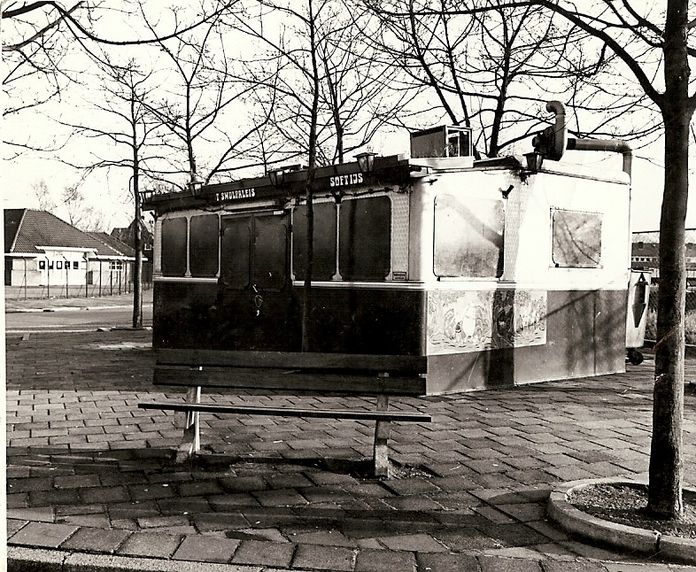
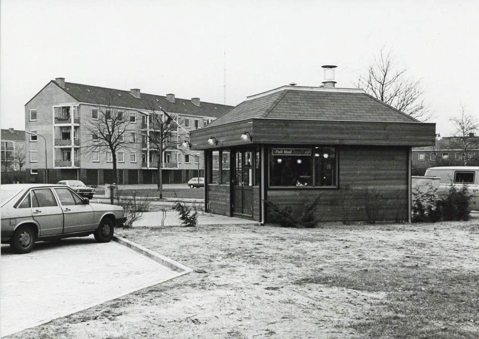
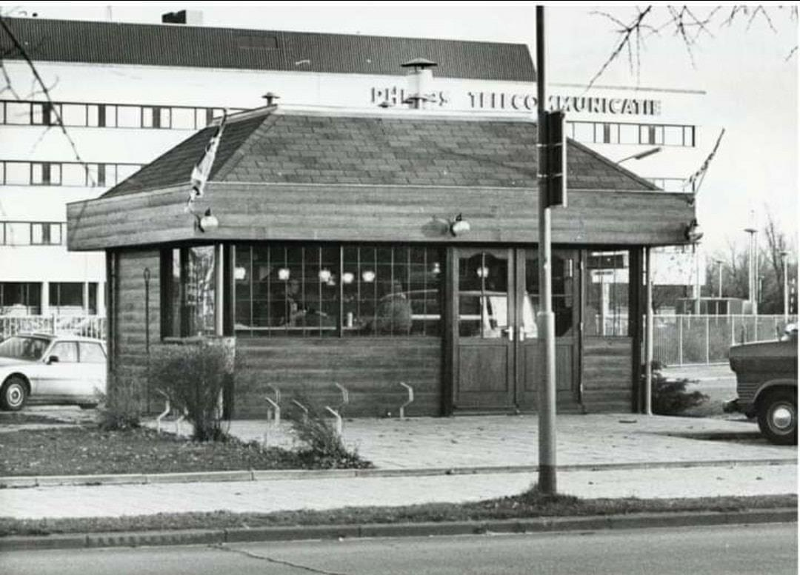

Cafetaria 't KamradEen begrip in Hilversum sinds 1981
Snacks, patat, broodjes en complete menu's, nog op een authentieke manier bereid. Met ambachtelijke gehaktballen, huisgemaakte maaltijden en vlees vers van de slager.
Elke dag open van 11:00 tot 20:00

Kamerlingh Onnesweg 156- Smaakvolle menu's
- Belegde broodjes of een verse salade
- Ambachtelijke gehaktballen
- Parkeren voor de deur
- Goed bereikbaar
Bij ons kunt u altijd lekker binnenst(h)appen
Aan de Kamerlingh Onnesweg in Hilversum is Cafetaria 't Kamrad sinds 1981 gevestigd. Makkelijk bereikbaar via alle uitvalswegen, aan een strookje groen: een toplocatie.
Hier kunt u terecht voor alles wat een goede snackbar te bieden heeft. Onze gezellige eettent bereidt de lekkernijen nog op een authentieke wijze, met échte producten om trots op te zijn, zoals de ambachtelijke gehaktballen en de huisgemaakte maaltijden.
Kom langs voor een broodje met de lunch of een verse salade, of haal 's avonds een compleet menu. U parkeert gewoon voor de deur.

Rechtstreeks van de slager
Onze vleeswaren en ons vlees komen elke dag weer vers van Slagerij Chateau Briand in Hilversum. Ook bij Slagerij Chateau Briand staan versheid en kwaliteit hoog in het vaandel.

Waar het ooit begon
't Kamrad is al generaties lang een familiezaak van de familie Ides. Het verhaal begint bij een snoeptentje.
-
Eind jaren 50
Een snoeptentje
Kees Ides, opa van Kim en Nicolien, kocht een snoeptentje op de Jan van der Heijdenstraat. Het winkeltje stond voor een elektrahuisje op de hoek van de Liebergerweg.

Archieffoto -
Midden jaren 60
'Welkom bij Kees'
Omdat er een hoogspanningskabel naar binnen moest, verhuisde het snoepwinkeltje naar de overkant van de kruising, voor het Veneta-gebouw. In die tijd begon Kees Ides ook patat en andere snacks te verkopen. De snackbar heette het 'Smulpaleis', en bij binnenkomst stond er boven de snackbar 'Welkom bij Kees'.

Archieffoto: 't Smulpaleis -
Daarna
Doorgezet met passie
Kees Ides overleed op 42-jarige leeftijd. Zijn zoons Clemens en Harry zetten de zaak voort voor hun moeder; uiteindelijk runde Harry de zaak met veel passie en liefde.
Toen het Veneta-gebouw gesloopt zou worden, leek er geen plaats meer te zijn voor de snackbar. Na een lange strijd met de gemeente en omwonenden bleef de huidige locatie toch behouden. Wim Valkengoed en Hans de Jong hebben de zaak daarna lange tijd gerund en verbouwd. Harry Ides zette de zaak uiteindelijk voort en droeg haar over aan zijn zoons Rutger en Arthur.

Archieffoto 
Archieffoto -
2010
Nicolien en Kim
In 2010 nam Nicolien Ides, de zus van Rutger en Arthur, samen met haar nicht Kim Ides de zaak over. Zij hopen dit nog vele jaren met passie en liefde te doen.
't Kamrad nu, aan de Kamerlingh Onnesweg
Contact
Voor vragen kunt u altijd contact met ons opnemen, telefonisch of via het formulier.
Adres
Kamerlingh Onnesweg 156
1223 JN Hilversum
Openingstijden
Maandag t/m zondag
11:00 – 20:00
Telefoon
Bestellingen kunnen alleen telefonisch worden opgenomen. Plaats geen bestelling via de mail of het contactformulier.